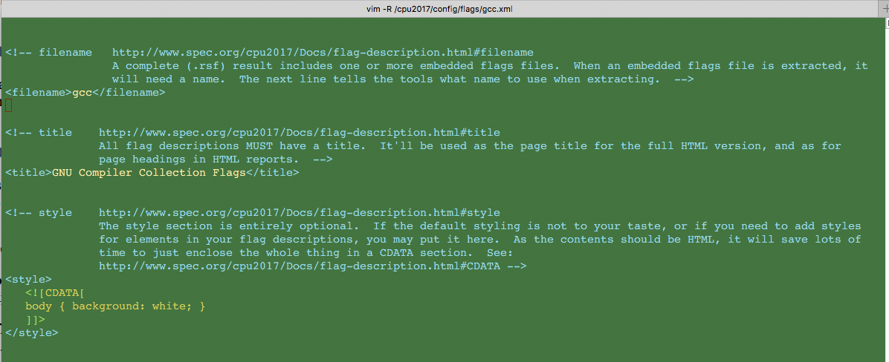
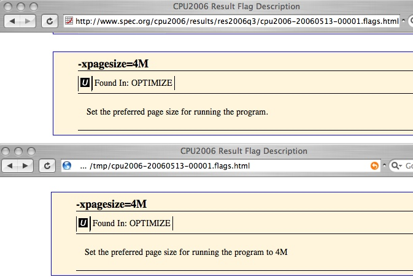
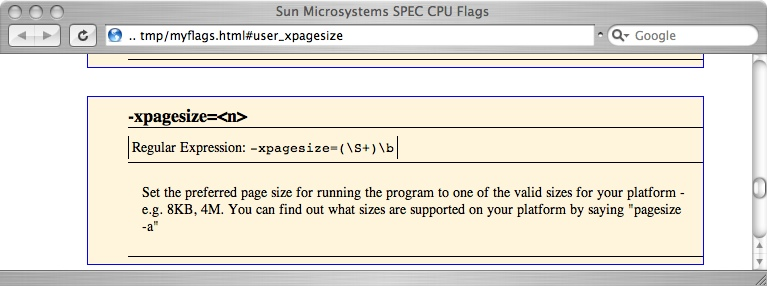

SPEC CPU®2017 Flag Description Files
ABSTRACT
This document describes the SPEC CPU®2017 flags description file format. SPEC CPU 2017 is
a product of the SPEC® non-profit corporation (about SPEC).
|
Element order, from below:
 |
Quick links:
- User flags files are of two kinds: compiler flags files and platform flags files.
- Some elements are allowed to appear in both compiler and platform flags files; some can only appear in one of them;
click diagram for details.
- Notice that some elements can appear in either file. Given a choice, which should you use? See guidelines.
|
Contents
|
Purpose
1 File Types, Usage, and Reporting
1.1 Flag File Types
1.2 Flag file usage
1.2.1 Required and optional user flags files
1.2.2 Including a file
1.2.3 Re-use is encouraged
1.2.4 Adding, removing, updating flags files
1.2.5 Which options for which flags file?
1.3 Reporting
1.3.1 Flags dump (HTML version all flags)
1.3.2 Per-result flags report
1.4 Example flags files
|
2 Flags file structure
2.1 Syntax basics
2.1.1 Tags, elements, and attributes
2.1.2 Enclosing tags and DTD
2.1.3 HTML comments are supported
2.1.4 Regarding embedded HTML
2.1.5 Element order
2.2 Common elements
2.2.1 Suggested filename (mandatory)
2.2.2 Title (mandatory)
2.2.3 Style sheet
2.2.4 Submit command
2.2.5 Software environment
2.3 Compiler flags file elements
2.3.1 FDO settings
2.3.2 Header (top level)
2.3.3 Headers for each class
2.3.4 Named Flags
2.4 Platform flags file elements
2.4.1 OS tuning
2.4.2 Virtual machine settings
2.4.3 Firmware settings
2.4.4 Parts and options
|
3 Flag Description Elements and Attributes
3.1 Flag name (mandatory)
3.2 Flag class (mandatory)
3.2.1 "mandatory" class
3.2.2 "forbidden" class
3.2.3 "portability" class
3.2.4 "optimization" class
3.2.5 "compiler" class
3.2.6 "other" class
3.2.7 "unknown" class
3.3 Regular expression (mandatory, but defaulted)
3.3.1 Default regular expression
3.3.2 Full Perl regular expressions may be used
3.3.3 Substituting captured text
3.3.4 When \b won't work
3.3.5 Regular expression references
3.4 Descriptive text (mandatory)
3.4.1 Example: update descriptive text with rawformat
3.5 Including other flags
3.5.1 Include by "flag" attribute
3.5.2 Include by "text" attribute
3.5.3 Splitters
3.6 List of compilers
3.7 Example flag text
3.8 Example replacements
3.9 Controlling flag display
3.10 Indication of parallelism
3.11 Other attributes
|
|
4 Other elements
5 Precedence
6 Best Practices
|
Purpose
This document describes how to write XML flag description files for use by SPEC CPU 2017.
SPEC CPU 2017 provides benchmarks in source code form, which are compiled under control of SPEC's toolset. Compiler
flags are reported with the help of flag description files. For each flag, they provide:
- A flag type, such as "portability" or "optimization".
- A regular expression to recognize the flag.
- What the flag means, so that someone reading a result can click on it and see a brief definition.
Flags description files are not limited to compiler flags. They also describe other performance-relevant options.
It is assumed that the reader has at least some familiarity with HTML. Familiarity with XML is not essential, but may be
helpful.
1. File Types, Usage, and Reporting
1.1 Flag File Types
Flag description files are supplied by SPEC or by benchmark users.
SPEC supplies these:
- The Suite-wide flags file contains flags that are applied to all compiles, which are generally
not switchable (the mandatory class) and not reported. It is supplied as $SPEC/benchspec/flags_mandatory.xml.
- Per-benchmark flags files describe flags for individual benchmarks, such as optional
portability flags. These are supplied as $SPEC/benchspec/CPU/nnn.benchmark/Spec/flags.xml.
If SPEC should need to update flags files that it supplies, they will be posted at the SPEC web site. You can update your
copies using runcpu --update.
User flags files are of two types:
- A Compiler flags file describes options that are used to build benchmark binaries.
It also describes features and settings related to the compilation environment.
- A Platform flags file describes characteristics of the system being tested.
For more information about which items to put into which flags file type, please see section 1.2.5.
1.2 Flag file usage
1.2.1 Required and optional user flags files
You must provide a compiler flags file. If you do not, your result will be marked "invalid", because the run
rules require that all tuning must be described. For example, you would
use a compiler flags file to describe the meaning of:
--optimize
Usually, you will need to provide a platform flags file. For example, if you use a firmware setting such as the following,
you would explain it in a platform flags file:
Power Management: Server Throughput
Optionally, you may provide more than one of either type, for example if you use two different compilers.
1.2.2 Including a file
User flag description files may be included via the config file (by the flagsurl variable) or via the runcpu command line --flagsurl switch. Each file's location may be specified as either a path on the local file
system or as a file:// or http:// URL. HTTPS is not supported.
In particular, your config file or runcpu command can re-use a previous flags file by picking it up directly from http://www.spec.org/cpu2017/flags/.
1.2.3 Re-use is encouraged
Flags Files Are Reusable - and they should be re-used. When multiple results use the same compiler, they can, and
probably should, use the same compiler flags file. When a series of hardware products share a common BIOS, they can, and
probably should, share a single platform file that describes that BIOS. Re-using flags files allows edits to be propagated
to multiple affected result pages.
Making it easier to re-use flags files is the point of the requirement to
separate compiler and platform flags. The intent is that items which tend to change together should be described together;
and things that change on separate schedules should be separated.
1.2.4 Adding, removing, updating flags files
User flag descriptions are automatically saved within the raw result file so that the result may be
reformatted without requiring access to the flags file.
You can use extract_flags to copy the flags from a result file to a
new file.
The flag descriptions stored in the raw file will be removed if the result is formatted with the 'noflags' pseudo-flags
file (--flagsurl noflags).
The stored flag descriptions can be updated: if you use
runcpu --rawformat --flagsurl=newflags1.xml,newflags2.xml
then the above-named two flag description files will replace any descriptions stored in the raw result
file. This feature can come in very handy if you need to update your user flags file after you have completed your
measurement run. For example, if a flag changes its meaning with a new compiler version, or you find that you have committed
typographical errors that cause flags to unexpectedly be reported as "unknown", runcpu
--rawformat can easily be rerun as needed.
Note that when reformatting with a new user flags file, all of the stored flags files will be replaced. If
multiple flags files were used when formatting a result, it is not possible to selectively replace only one. Instead, extract all of them; make your edits; and then put them all back in with rawformat.
An example of using rawformat to update a flags file can be found in section 3.4.1.
1.2.5 Which options for which flags file?
Some options may be described in either a compiler flags file or a platform flags file. This section explains why SPEC
allows that flexibility, and explains how to pick which file type to use. First, a reminder:
The intent of the separation of compiler
flags from platform flags is to improve the probability that things which tend to change together are described together, and
that things which tend to change separately are described separately.
For some kinds of information, the placement is obvious. For example:
- An f90 compiler uses --optimize. Describe it in a compiler flags file.
- A firmware or BIOS setting selects main memory speed. Describe it in a platform flags file.
- A shell command ulimit is needed to compile the benchmarks. Describe it in the compiler flags
file.
So far, these examples are straightforward. Some options are harder to classify:
- A run time environment variable OMP_NUM_THREADS is closely tied to a compiler option
--openmp.
- CPU cores are selected at run time by a numactl command.
For Example 4 you could pick either choice, with a slight preference for the compiler flags file because this run-time option
is closely related to a compile-time option. If you set it by the config file options env_vars or preenv, the relationship becomes
stronger, as does the preference.
For Example 5 you could pick either choice: numactl is clearly a runtime setting, however, it may be called via the
config file option submit, and its usage might be developed by the same person
who develops the compile tuning options. Therefore you might find it more convenient to use the compiler flags file, and this is
allowed.
Having considered these examples, we are ready to describe a set of guidelines.
Table 1: Guidelines for placement of descriptions.
If an option can be described in multiple places, SPEC recommends choosing the location using these
criteria: |
| A |
Result pages should state what tuning is chosen. |
| B |
Flag description files should describe what the tuning means. |
| C |
If the tuning is required in order to build the benchmarks, then describe it in a compiler flags file. |
| D |
If the tuning relates to the run-time environment and is invisible to the build process (even after considering config
file features such as preenv and submit), then describe it in a platform flags file. |
| E |
For options that do not fit either of the previous two guidelines, please estimate whether it is likely to change as
compilers evolve or to change as platforms evolve, and pick the file accordingly. |
1.3 Reporting
Flag description files affect all reports, which draw on the flags description files in order to correctly classify flags as
optimization, portability, and so forth. There are two types of HTML flags outputs.
1.3.1 Flags dump (HTML version all flags)
A "flags dump" can be generated by flag_dump (see utility.html). A flags dump is an HTML version of all the flags from an XML flags description
file.
1.3.2 Per-result flags report
A "per-result flags report", such as CPU2017.505.fprate.flags.html, is generated by runcpu --output_format flags (see runcpu.html). A
per-result flags report includes descriptions only for the flags that were used in that particular test.
Per-result flags reports can be regenerated using runcpu --rawformat.
An example of using rawformat to update a flags file can be found in section 3.4.1.
1.4 Example flags files
You will find several examples on your installed copy of SPEC CPU 2017 in $SPEC/config/flags (Unix) or %SPEC%\config\flags (Windows). The example flags file for GCC is a real, working example which has been annotated and cross-referenced to this document. You might want to copy it, and bring it up in a program such as notepad; or (as shown below), you could edit it using vim -R, where the "-R" indicates read-only mode.

In addition, there are many flags files at the SPEC web site that have been
posted with published results. You can find them as shown in the figure below.
- Selecting any optimization flag, such as the one called out by 1, will
take you into the per-result flags report -- in this case, to the section that describes -xpagesize.
- The bottom of the result, at 2, points to a flags dump.
- At 3, you can find the original .xml user flags file.
Don't click on an xml file; it will likely annoy your browser. Instead, download it to your machine (e.g.
with right-click) and open it with an editor.

Figure 1: How to find example flags files at
www.spec.org
2. Flags file structure
As you read this description, you may find it useful to refer to the examples, as mentioned above.
2.1 Syntax basics
A few basic XML concepts are introduced in here. The definitive source for XML is www.w3.org. You can find more basic descriptions by searching the web for 'XML Introduction'.
2.1.1 Tags, elements, and attributes
First, some terminology. Consider:
<title>Flag descriptions for ACME Compiler 12.2</title>
<flag name="rounding"
class="optimization"
regexp="-round\b">
<include text="-lfastmath" />
Allow mathematical operations to complete more quickly, with a slight
loss of accuracy. Specifically, on some operations, the bottom
digit may not be correctly rounded.
</flag>
In XML terminology, the words in between angle brackets above are called tags, and the tags delimit
elements. Notice that most elements have surrounding tag pairs. For example, the title element begins with start tag
<title> and ends with </title>.
A tag can also be self-closing, or empty, as in the include tag above. Notice that
there is no </include> tag above; rather, there is only a single tag, which ends with "/>".
An element may contain other elements. For example, the <flag> and </flag> tags delimit a multi-line element that contains an <include> element.
A tag may have one or more attributes, which are name=value pairs in the tag. Although
the <include> tag above is termed empty (or self-closing), it nevertheless has an
attribute, text="-lfastmath", which causes the inclusion of the description for the fast math
library.
2.1.2 Enclosing tags and DTD
A flags description file is an XML 1.0 file that conforms to the SPEC CPU flags description Document Type Definition
(DTD).
The first lines of the flags file must be
<?xml version="1.0"?>
<!DOCTYPE flagsdescription
SYSTEM "http://www.spec.org/dtd/cpuflags2.dtd"
>
<flagsdescription>
Please note that the dtd version is cpuflags2.dtd, not cpuflags1.dtd.
As you might expect, the file must end with a line that is simply
</flagsdescription>
The first three lines claim that your document is an XML document that conforms to a specific DTD. Can you prove that? Yes,
for example with RXP, a validating XML parser, which
is included with SPEC CPU 2017 as "specrxp". See topic "specrxp" in utility.html.
2.1.3 comments are supported
Standard HTML-style comments are supported. It is suggested that you use comments near the top of the file to describe
its purpose, the system to which it applies, etc. These comments must NOT come before the DOCTYPE
declaration. For example:
<!-- ACME Compiler 12.2 Flags.
Originally written for V1.0 by Aaron (chairman of the Committee on Engrossed Bills)
and updated subsequently to V12.2.
-->
2.1.4 Regarding embedded HTML
A flags description file is an XML document. Flag descriptions commonly include HTML. However, embedding HTML within XML
poses a challenge, because XML parsers are promised that ampersand (&) and left angle bracket (<) do not appear unless
used as XML markup. The solution is to hide embedded HTML by enclosing it within CDATA sections.
(Alternatively, individual brackets could be escaped one at a time, but this is not recommended.)
A CDATA section begins with
<![CDATA[
and ends with
]]>
Any text between the start and end tags will not be touched by the XML parser. Of course, the CDATA end
tag may not appear unescaped in the enclosed text.
For example:
<header><![CDATA[
<p>This is an <i>ACME Corporation</i> flags description.</p>
<p>Please read it.</p>
]]></header>
SPEC CPU 2017 reports are compliant with the XHTML 1.0 Strict
standard. Care should be taken that any HTML markup used does not cause reports to become invalid or not well-formed. There
is an on-line validator which may be used to check those elements.
Because the flag descriptions for a per-result flags report have the same markup as in the flag dump, validating the flags
dump (as generated by flag_dump) will ensure that per-result flags
reports are also valid.
For convenience, flag descriptions that do not include any HTML will have <p>...</p> added to them. For example:
<flag name="F-fstrength-reduce" class="optimization">
<![CDATA[
<p>Perform the optimizations of loop strength reduction and elimination of
iteration variables.</p>
]]>
</flag>
could also be said as:
<flag name="F-fstrength-reduce" class="optimization">
Perform the optimizations of loop strength reduction and elimination of
iteration variables.
</flag>
Automatic addition of <p>...</p> is the only HTML that gets added automatically;
otherwise, you're on your own for writing valid HTML. If you do write any of your own HTML, <p>...</p> is not added, because the paragraph tags might interfere with whatever
else you had set out to do. In fact, if you include any left or right angle brackets (whether for HTML or just because you'd
like to say that "3 > 2"), the automatic addition of <p>...</p> does not
occur.
2.1.5 Element order
The DTD specifies a strict order for elements described in this chapter. When you use any of
these elements, they must appear in the correct order.
Some elements, labeled "common" below, may appear in any flags file. Others may appear only a compiler flags file or only in a platform flags file. The
sections below explain what the expected contents are for each element.
Table 2: Element order by file type
compiler common platform
File name (*)
Title (*)
Style
Submit command
SW environment
/ \
/ \
/ \
FDO settings OS tuning
Header Virtual Machine
Named flags Firmware
Parts
(*) Mandatory. All other elements are optional.
2.2 Common elements
The elements described in this section may appear in both compiler flags files and in platform flags files.
2.2.1 Suggested filename (mandatory)
There are times when the flag file moves around without a filename, such as when it is enclosed in a raw result file.
In order to make it possible to extract the file and automatically save it with a useful name, the <filename>...</filename> element may be used to suggest the base of a filename.
For example, this suggests that the filename begin with "ACME-12.2":
<filename>ACME-12.2</filename>
The filename may consist of alphanumeric characters, periods, underscores, and hyphens. If present, other characters will
be converted to underscores.
Because this is meant to be the base of a filename, any '.xml' or '.html' extensions will be automatically and silently
stripped.
There is no guarantee that all tools which might save a copy of the flags file will use the contents of this element.
It is only a "suggestion".
A filename element must be provided with all flags files.
2.2.2 Title (mandatory)
Using the <title>...</title> element, you can define text which will be used to
form the HTML page title for a flags dump (commonly seen as the window title for the browser). This text is also used as the
initial header on the page.
The <title> element is not used for results reporting; it is only used when dumping the
flags to an HTML file.
Because it is used in the page title, this element must not contain any HTML markup.
For example:
<title>GNU Compiler Collection Flags</title>
A title element must be provided with all flags files.
2.2.3 Style sheet
SPEC CPU 2017 reports use structural HTML with presentation controlled by CSS. Most discrete elements are identified by a class
or an ID (or both) so that they can be styled with a great degree of control. There is a common style sheet, as well as style sheets containing tweaks for screen output and for print output. They
contain code to handle everything that the tools output by default.
If you'd like to define some classes for use in your own markup, or if you'd like to override some of the default CSS, you
may do so by using the <style>...</style> element. Doing so will affect both
per-result flags reports and the flags dump.
As mentioned above, because the flag description file is parsed as XML, some things in the CSS (such as left angle
brackets) must be escaped. It is easiest to just enclose all of the CSS in a CDATA section.
For example:
<style><![CDATA[
body { background: white; }
]]></style>
2.2.4 Submit command
The <submit_command>...</submit_command> element may be used to describe settings,
programs, or scripts used in conjunction with the config file submit option.
If a script is used to handle submissions, the full text is typically included here.
The content of the submit_command element is inserted verbatim after the flag descriptions at the end of both the flags
dump and the per-result flag report. For example:
<submit_command><![CDATA[
<p><b><tt>submit=echo 'pbind -b...' > dobmk; sh dobmk</tt></b> (SPEC tools, Unix)<br />
When running multiple copies of benchmarks, <tt><b>submit</b></tt> is used to cause
individual jobs to be bound to specific threads. Here is a brief guide to understanding
the specific command which will be found in the config file: </p>
<ul>
<li><tt><b>echo ... > dobmk</b></tt> causes the generated commands to be written
to a file, namely <tt>dobmk</tt>. </li>
<li><tt><b>sh dobmk</b></tt> actually runs the benchmark.</li>
<li><tt><b>pbind -b</b></tt> causes this copy's processes to be bound to the thread
specified by the expression that follows it. See the config file used in the
submission for the exact syntax, which tends to be cumbersome because of the
need to carefully quote parts of the expression. When all expressions are
evaluated, each thread ends up with exactly one copy of each benchmark. The
pbind expression may include:
<ul>
<li><tt><b>$SPECCOPYNUM</b></tt>: the SPEC tools-assigned number for this
copy of the benchmark. </li>
<li><tt><b>psrinfo</b></tt>: find out what processors are available </li>
<li><tt><b>grep on-line</b></tt>: search the <tt>psrinfo</tt> output for
information regarding on-line cpus </li>
<li><tt><b>expr</b></tt>: Calculate simple arithmetic expressions. For
example, the effect of binding jobs to a (quote-resolved) expression such
as: <br />
<tt>expr ( $SPECCOPYNUM / 4 ) * 8 + ($SPECCOPYNUM % 4 ) )</tt><br />
would be to send the jobs to processors whose numbers are: <br />
<tt>0,1,2,3, 8,9,10,11, 16,17,18,19 ...</tt> </li>
<li><tt><b>awk...print \$1</b></tt>: Pick out the line corresponding to this
copy of the benchmark and use the CPU number mentioned at the start of
this line. </li>
</ul></li>
</ul>
]]></submit_command>
Notice in the example above that the flags file author has gone to some trouble to make the eventual webpage readable
by the consumer of the result (by using various HTML markup), and to make the HTML source maintainable (by indenting and
whitespace). Both practices are recommended.
The submit command element may appear in both compiler flags files and in platform flags files. For guidance as to which to use, please see section
1.2.5.
2.2.5 Software environment
The <sw_environment>...</sw_environment> element may be used to describe
shell resources, environment variables, and other software options or installation settings.
The content of the sw_environment element is inserted verbatim after the submit_command section (if any) at the end of
both the flags dump and the per-result flag report. For example:
<sw_environment><![CDATA[
<dl>
<dt>HUGETLB_MORECORE</dt>
<dd>Set this environment variable to "yes" to enable applications to use
large pages.</dd>
<dt>LD_PRELOAD=/usr/lib64/libhugetlbfs.so</dt>
<dd>Setting this environment variable is necessary to enable applications to
use large pages.</dd>
<dt>KMP_STACKSIZE</dt>
<dd>Specify stack size to be allocated for each thread.</dd>
<dt>KMP_AFFINITY</dt>
<dd>
<ul>
<li>KMP_AFFINITY = < physical | logical >, starting-core-id <br />
specifies the static mapping of user threads to physical cores.
For example, if you have a system configured with 8 cores,
OMP_NUM_THREADS=8 and KMP_AFFINITY=physical,0 then thread 0 will
be mapped to core 0, thread 1 will be mapped to core 1, and
so on in a round-robin fashion.</li>
<li>KMP_AFFINITY = granularity=fine,scatter <br />
The value for the environment variable KMP_AFFINITY affects how
the threads from an auto-parallelized program are scheduled
across processors. <br />
Specifying granularity=fine selects the finest granularity level,
causes each OpenMP thread to be bound to a single thread context. <br />
This ensures that there is only one thread per core on cores
supporting HyperThreading Technology<br />
Specifying scatter distributes the threads as evenly as possible
across the entire system. <br />
Hence a combination of these two options, will spread the threads
evenly across sockets, with one thread per physical core.
</li>
</ul>
</dd>
</dl>
]]></sw_environment>
The software environment element may appear in both compiler flags files and in platform flags files. For guidance as to which to use, please see section
1.2.5.
2.3 Compiler flags file elements
2.3.1 FDO settings
The <fdo_settings>...</fdo_settings> element may be used to describe settings or
programs used when doing feedback-directed optimization. This section should
not be used to describe flags and settings covered by named flags. It is intended primarily to describe
settings for and programs used in fdo_* options.
The content of the fdo_settings element is inserted verbatim after the submit_command section (if any) at the end of both the
flags dump and the per-result flag report. For example:
<fdo_settings><![CDATA[
<p>When feedback-directed program reorganization (FDPR) is performed,
the following settings are used:</p>
<pre>
fdo_pre2 = rm -f $baseexe.nprof $baseexe.instr; fdpr -1 -q -p $baseexe
fdo_run2 = fdpr -2 -q -p $commandexe -x $command
fdo_post2 = fdpr -3 -q -O4 -p $baseexe; mv $baseexe $baseexe.orig; cp ${baseexe}.fdpr $baseexe
</pre>
<p>In brief, here is an explanation of the commands and the options used:</p>
<ol>
<li><tt>fdo_pre2</tt> Leftover outputs in the build directory (if any) are removed</li>
<li><tt>fdo_pre2</tt> The executable is instrumented and an initial static profile generated</li>
<li><tt>fdo_run2</tt> The training workload is run to generate a dynamic profile</li>
<li><tt>fdo_post2</tt> The profiles are evaluated and a new, reordered binary (<baseexe>.fdpr)
is generated</li>
<li><tt>fdo_post2</tt> The uninstrumented binary and the reordered binary are swapped so that
the tools use the reordered binary for the benchmark runs.</li>
</ol>
<p>Options used for the fdpr program:</p>
<ul>
<li><tt>-1</tt>: Phase 1 - generate static profiles</li>
<li><tt>-2</tt>: Phase 2 - generate dynamic profiles</li>
<li><tt>-3</tt>: Phase 3 - reorder binary</li>
<li><tt>-q</tt>: Quiet mode - no output to stdout</li>
<li><tt>-p <program></tt>: Operate on the named binary</li>
<li><tt>-x <cmd></tt>: When generating dynamic profiles, use the following
arguments to <program></li>
<li><tt>-O4</tt>: Switch on the following optimizations: [...etc] </li>
</ul>
]]></fdo_settings>
The FDO settings element may appear only in compiler flags files.
2.3.2 level)
Within a <header>...</header> element you can provide some HTML text that you
would like to have added to reports.
The contents of this section will be inserted verbatim after the top-level header and before the start of the flag
descriptions. If it is non-empty, it must be well-formed and valid XHTML 1.0. If in doubt, validate it.
For example:
<header><![CDATA[
<p>This is a flags description file for ACME Platforms using ACMEBIOS 8 firmware.</p>
<p>CPU throttling and Power Management firmware settings are described here.
</p>
]]></header>
The default header section in the user flag description file is output in both the flags dump (as
generated by the flag_dump utility), and the per-result flags report.
Header settings elements may appear only in compiler flags files.
2.3.3 for each class
It is possible to provide some HTML which will appear in a flags dump at the top of each class section, before the flags in
that section. This text is also specified with the header element, with a "class" attribute added.
Per-class header sections in the user flag description file only appear in the flags dump (as
generated by the flag_dump utility); they do not appear in a per-result
flags report.
For example, for general notes about optimization flags, use something like this:
<header class="optimization"><![CDATA[
<p>Some suboptions either enable or disable a feature.</p>
<p>Suboption values and their effects:</p>
<ul>
<li>1, on, true - enable the feature</li>
<li>0, off, false - disable the feature</li>
</ul>
<p>These values are not case sensitive.</p>
</p>
]]></header>
Header settings elements may appear only in compiler flags files.
2.3.4 Named Flags
The description of each individual flag is enclosed in <flag>...</flag> tags.
Because flag recognition and reporting has many features, it is described separately in its own chapter. For now, one example will serve as an introduction:
<flag name="disable-unroll"
class="optimization"
regexp="-nounroll|-unroll=0" >
<![CDATA[
<p>Disables loop unrolling, which is an optimization where the
compiler tries to improve performance by making multiple copies of
loop bodies. </p>
]]>
</flag>
This example describes a flag named disable-unroll. If a benchmark
is compiled using either -nounroll or -unroll=0 (notice these strings
in the regular expression, or regexp), then the class attribute will cause
the Optimization Flags section of the report to link to the descriptive text that is provided:
namely, the paragraph that begins "Disables loop..."
Named flag elements may appear only in compiler flags files.
2.4 Platform flags file elements
2.4.1 OS tuning
The <os_tuning>...</os_tuning> element may be used to describe
operating system install options, boot settings, other operating system configuration settings relevant to the run.
The content of the os_tuning element is inserted verbatim after the sw_environment section (if any) at the end of both the
flags dump and the per-result flag report. For example:
<os_tuning>
<![CDATA[
<p><b><kbd>autoup=<n></kbd></b> (Unix /etc/system)
<br />When the file system flush daemon <tt>fsflush</tt> runs, it writes
to disk all modified file buffers that are more than <kbd>n</kbd> seconds
old. </p>
<p><b><kbd>psrset -c <n></kbd></b> (Unix, superuser commands)
<br /> Creates a new processor set and displays the new processor set ID.
</p>
<p><b><kbd>psrset -e <n></kbd></b> (Unix, superuser commands)
<br /> Executes a command (with optional arguments) in the specified
processor set. The command process and any child processes are executed
only by processors in the processor set.</p>
<p><b><kbd>tune_t_fsflushr=<n></kbd></b> (Unix /etc/system)
<br /> Controls the number of seconds between runs of the file system
flush daemon, <tt>fsflush</tt>. </p>
]]>
</os_tuning>
The OS tuning element may appear only in platform flags files.
2.4.2 Virtual Machine Settings
The <virtual_machine>...</virtual_machine> element may be used to describe
settings pertaining to hypervisors, domains, partitioning, or any other virtualization technology used during the benchmark
run.
The content of the virtual_machine element is inserted verbatim after the os_tuning section (if any) at the end of both
the flags dump and the per-result flag report. For example:
<virtual_machine><![CDATA[
<p>The benchmark run was performed in a resource-capped container configured with
the following zonecfg(8) file:</p>
<pre>
create -b
set zonepath=/zhome/speccpu
set brand=ipkg
set autoboot=true
set limitpriv=default,dtrace_proc,dtrace_user
add dataset
set name=tank/speccpu
end
add capped-cpu
set ncpus=1
end
add capped-memory
set swap=2G
end
</pre>
]]></virtual_machine>
The virtual machine element may appear only in platform flags files.
2.4.3 Firmware settings
The <firmware>...</firmware> element may be used to describe
firmware, BIOS, or microcode settings used on the system under test.
The content of the firmware element is inserted verbatim after the virtual_machine section (if any) at the end of both the
flags dump and the per-result flag report. For example:
<firmware><![CDATA[
<dl>
<dt>Hardware Prefetch:</dt>
<dd>
<p>This BIOS option allows the enabling/disabling of a processor mechanism
to prefetch data into the cache according to a pattern-recognition algorithm.</p>
<p>In some cases, setting this option to Disabled may improve performance.
Users should only disable this option after performing application benchmarking
to verify improved performance in their environment.</p>
</dd>
<dt>Adjacent Sector Prefetch:</dt>
<dd>
<p>This BIOS option allows the enabling/disabling of a processor mechanism
to fetch the adjacent cache line within a 128-byte sector that contains the
data needed due to a cache line miss.</p>
<p>In some cases, setting this option to Disabled may improve performance.
Users should only disable this option after performing application benchmarking
to verify improved performance in their environment.</p>
</dd>
<dt>High Bandwidth:</dt>
<dd>Enabling this option allows the chipset to defer memory transactions and
process them out of order for optimal performance.</dd>
</dl>
]]></firmware>
The firmware element may appear only in platform flags files.
2.4.4 Parts and options
The <parts>...</parts> element may be used to describe
hardware and software parts and options needed to complete the system.
The content of the parts element is inserted verbatim after the firmware section (if any) at the end of both the
flags dump and the per-result flag report. For example:
<parts><![CDATA[
<p>Any case and fan combination providing at least 347 SCFM over the
processor's thermal control gear.</p>
<p>PGUM #28-451 must be installed in order to enable large pages to
be allocated on non-local memory boards in large memory systems. This
is an extra-cost option and does not come with the standard operating
system install.</p>
]]></parts>
The parts element may appear only in platform flags files.
3. Flag Description Elements and Attributes
This chapter provides the full description for <flag> elements and attributes. A brief
overview of the XML concepts of tags, elements, and attributes is available in section
2.1.
A flags file can be validated against its XML dtd. Therefore, flag details must be specified
in the correct locations. Some are specified as attributes within the opening <flag ... >
tag, and others are specified as standalone elements inside of the flag element. The text of the
flag description itself is the text within the flag section; it is not called out by any special
element or attribute name, although usually you will want to place it within a CDATA marker.
The attributes that are allowed on a flag tag are:
name (*)
class (*)
regexp (**)
compilers
parallel
(*) The name and class are mandatory.
(**) The regexp must be provided unless it is implied by
a carefully chosen name.
Attributes may be specified in any order.
The elements that are allowed to be contained inside a flag element are:
example
ex_replacement
include
display
descriptive text (usually within CDATA)
Unlike top-level elements, these "child" elements of the flag element may be specified in any
order.
Here is an example that contains every allowed attribute and element:
<flag name="F-Ox"
class="optimization"
regexp="-O(\d+)\b"
compilers="cc,c++"
parallel="no"
>
<example>-O3</example>
<ex_replacement>3</ex_replacement>
<!--
Comments can be freely added between elements
-->
<include flag="F-Qunroll" />
<include text="F-inline=$1" />
<display enable="1" />
<![CDATA[
<p>-O$1 enables optimization at level $1.</p>
<!-- Because this comment appears within the CDATA section, it will also
appear in any HTML generated from the flag description. -->
]]>
</flag>
Whitespace is largely ignored (except within quoted and CDATA sections).
All of the options are fully explained in the sections below.
3.1 Flag name (mandatory)
The requirements are:
- Each flag must have a name attribute.
- A name must begin with a letter, a colon, or an underscore.
- After that, it may be composed of letters, digits, periods, hyphens ('-'), underscores, or colons.
The XML name attribute is almost never going to be spelled exactly the same way as the human-readable compiler flag, since
compiler flags typically begin with other characters, such as slash (/) and hyphen (-). Note also that a name may not include an
equals sign. See the regexp section for suggested naming conventions that meet the above
restrictions.
Although the XML name string is arbitrary, you will probably find it useful to choose names that bear an
obvious relationship to human-readable compiler flag names. If the compiler calls it --bigger, your XML should not say flag name="smaller" for three reasons:
- To make it easier to maintain your flags file.
- Because the XML name is sometimes printed in flag dumps (if alternative example text is not
supplied).
- Because well-chosen names will save you having to write many regular expressions, as described below.
The XML flag name attribute must be unique. If you format a single result using multiple flags
files (with --flagsurl=file1.xml,file2.xml or the config file option flagsurl), the name must be unique across all the files.
The naming restrictions are derived from the "Name" production (#5) in XML 1.0 section 2.3.
3.2 Flag class (mandatory)
Each flag must also have a class attribute, which determines how the flag is reported. There
are 7 possible classes.
3.2.1 "mandatory" class
These are flags that are supplied by SPEC for every compile. With a few exceptions, they cannot be overridden. Flags in the
"mandatory" class are not listed on per-result flags reports, but they do appear in the dump of the suite-wide flags file. The
original is on your installed copy of SPEC CPU 2017 as $SPEC/benchspec/flags-mandatory.xml (Unix) or %SPEC%\benchspec\flags-mandatory.xml (Windows) and the HTML version is in the flags subdirectory of
the Docs directory, as flags-mandatory.html.
3.2.2 "forbidden" class
These are flags that may not be used. If "forbidden" flags are present, that does not prevent you from doing a run; but
such flags will be prominently displayed in red on the result pages and your result will be marked "Invalid".
3.2.3 "portability" class
Flags in this class are candidates for consideration as portability as defined in the SPEC CPU 2017 rules. For example, the flags description file for 500.perlbench_r classifies -DSPEC_LINUX_IA32 as portability; if your system
needs it, your config file might say:
500.perlbench_r,600.perlbench_s:
PORTABILITY = -DSPEC_LINUX_IA32
and the reports of your runs will mention the use of -DSPEC_LINUX_IA32 in the
Portability Flags section. Note: the appearance of a flag in the "portability" class in a flag description file is not alone
enough to meet the rule; the tested platform must actually need the
flag.
Portability flags are required to appear in configuration variables that contain the string PORTABILITY; if you use a flag from the portability class in a configuration variable such as OPTIMIZATION, COPTIMIZATION, and so forth, this will be flagged as an error.
3.2.4 "optimization" class
Use the optimization class for flags that control, invoke, enable, encourage, or otherwise affect optimization.
If in doubt between class other and optimization, pick optimization.
If any flags in the optimization class are used in a configuration variable that are intended for portability flags,
such as PORTABILITY, CXXPORTABILITY, and so forth, this will be noted in
the results.
3.2.5 the "compiler" class
Flags in the compiler class are used only to match the invocation strings for compilers (that is, the
first token on the command line).
The compiler class can be combined with the compilers attribute to dis-ambiguate flags with
identical spelling (identical regexp) that are used by multiple compilers. In the example below, notice that both the C
and C++ compilers have a switch with regexp="-g" and slightly different meanings:
<flag name="tbcc" class="compiler" regexp="/opt/turboblaster/cc">
C compiler
</flag>
<flag name="tbcxx" class="compiler" regexp="/opt/turboblaster/c++">
C++ compiler
</flag>
<flag name="cc_g" class="optimization" regexp="-g" compilers="tbcc">
<![CDATA[
<p>
Enables debugging.
Does <i>not</i> disable any optimizations.
</p>
]]>
</flag>
<flag name="cxx_g" class="optimization" regexp="-g" compilers="tbcxx">
<![CDATA[
<p>
Enables debugging.
Disables inlining unless optimization is <tt>-O4</tt> or greater.
</p>
]]>
</flag>
The flags cc_g and cxx_g are linked to the correct compilers with their compilers= attribute. The
effect is is that when reporting on a benchmark whose compile line begins /opt/turboblaster/cc, if the
-g switch is used, it will get the first description above ("does not disable any optimizations"); if reporting on a C++
benchmark, then the second description will be used ("Disables inlinling unless...")
Compare the compiler class vs. the compilers attribute.
3.2.6 "other" class
This class is used for flags and other things that are neither optimization nor portability. These include flags that
specify locations to the compiler, flags that change the compiler's verbosity, etc. Items in this class will be displayed on
the per-result flags report.
3.2.7 "unknown" class
This class is used internally in the tools. Flags in this class will
always be listed in the "unknown flags" section on the per-result flag
report. This should not be used in a flags description file; after all, if
it's listed there, it isn't unknown, is it?
3.3 Regular expression
(mandatory, but defaulted)
Each flag must have a regexp attribute, which is a Perl-style regular expression that can
be used to pick the flag out of a string of characters. This requirement may seem daunting, but for many flags, a
carefully-chosen name will yield a default regexp that will work.
If you've not seen regular expressions before, suggestions for reading may be found in section 3.3.5.
3.3.1 Default regular expression
Commonly, a regular expression is can be generated by default from the flag name, if you understand that the tools provide a
default regexp using the transformations in this section (which are applied in the order listed):
If a flag name begins with the string "F-", the "F" will be
stripped, and the remainder used as the basis for the default regexp. Thus a flag named "F-fast" will generate a default regexp that matches "-fast". The regexp
will do case-sensitive matching. This takes care of a common situation for Unix systems.
If a flag name begins with the string "f-", the "f-" will be
stripped, and "[-/]" will be prepended to it. In addition, the regexp will have "(?i)" added to the beginning to cause it to match in a case-insensitive fashion. Thus a flag
named "f-optimize" will generate a default regexp that will match any of
"/OPTIMIZE",
"-OPTIMIZE",
"-Optimize", or
"/OpTiMiZe".
This takes care of a common situation for Windows systems.
If no replacement for "F-" or "f-" was done,
"[-/]" will be prepended to the regexp. This option is available if you want case-sensitive
matching for the string and you want the beginning punctuation to be included in the regexp, but you don't care whether the
punctuation looks like Unix or Windows. This situation is, as it were, case sensitive and OS-insensitive.
The default composition of a name does not allow it to contain an equals ("=") symbol; since this is common in many flags, the next decision is made based on whether or not a
colon is present, as a stand-in for equals.
If the string contains a colon (":") then the first (and
only the first) occurrence of a colon will be converted to an equal symbol. Thus a flag named "F-DBYTEORDER:1234" will match "-DBYTEORDER=1234".
If the string does not contain a colon, then the default regexp value will have
(?:\([^\)]+\))?
and
((?:=\S*)?
appended to it. The first pattern matches an opening left parenthesis, one or more characters that are not right
parentheses, and a closing right parenthesis. In other words, a list of arguments enclosed in parentheses. In the second
pattern, "=" matches an equals sign - that is, it is not a pattern metacharacter, unlike all the
rest of this regular expression. The "\S*" says that a string of non-blank characters is
optional. In both cases, the "(?:pattern)" notation groups the pattern inside the parentheses
so that the "?" operator that immediately follows the closing parentheses applies to it, thus
allowing 0 or 1 instances of the whole thing.
The overall effect of "(?:\([^\)]+\))?(?:=\S*)?" is thus to both optionally match an
argument list enclosed in parentheses, and to optionally match an equals sign and a value that does not contain whitespace.
This should be sufficient to catch most forms of basic definition: a flag named
"F-DFOO" will catch use of "-DFOO", "-DFOO=", and "-DFOO=bar".
Finally, we will keep the default regular expression from matching longer flags that have the above as the first
part of the string. For example, we do not want "-DSPEC_SOLARIS" to match "-DSPEC_SOLARIS_SPARC" (since that would leave "_SPARC" alone
and unknown). Usually, "\b" (match a word boundary) is added to the end. But if the
flag does not end with an alphanumeric, then "(?=\s|$)" will be appended to the regexp,
which says to accept either white space or end of string. (You'll find more about this way of recognizing the end of a
switch in section 3.3.4, below.)
Note that if this sequence of transformations does not yield an acceptable regular expression, it will be necessary to
provide one explicitly via the regexp attribute. Some hints for doing so are given in the next
few sections.
Some cases in which the default regular expression is not sufficient:
- The flag marker is a forward slash, but is not allowed to be a dash; or it is neither.
- There is no flag marker, as when matching the name of a library that is linked directly (that
is, not via -l).
3.3.2 Full Perl regular expressions may be used
When the text of a flag is not constant, a more complex regular
expression must be used. In that case, nearly any of the full range of
Perl regular expression features may be used: backreferences, negative and
positive look-ahead and look-behind assertions, minimal matching, etc. The
only features that may not be used are ones marked "experimental" in the
Perl documentation or ones which involve evaluating Perl code inside the
regular expression.
3.3.3 Substituting captured text
Captured backreferences may be substituted into the flag description text and included flags . For example, in the following (inadequate) flag description:
<flag name="xO"
class="optimization"
regexp="-xO([0-9]+)\b">
This flag enables optimization at level $1.
</flag>
The regexp would match any flag which consisted of the characters "-xO" followed by one or
more digits. The digits are "captured" by the parentheses that surround [0-9]+ and made
available to the text. So for a flag like "-xO5", the text produced in the flag report would
read
This flag enables optimization at level 5.
This feature allows complex flags (such as a flag that causes the compiler to pass a bunch of flags directly to the
linker) to be compactly described. There's no reason you couldn't simply list each variation separately; in cases where
there are only two or three possibilities, that may be preferable. But if you want to get fancy, you can.
To insert a literal dollar sign into replacement text, prefix it with a
backslash ("\", as in
\$VMSDirName). To insert a literal
backslash, prefix it with another backslash.
3.3.4 When \b won't work
If your flag ends with a non-alphanumeric character, \b is
not the correct way to end it. The reason is that
\b is a zero-width assertion that matches the boundary between a
"word" (alphanumeric) character and a non-"word" character. For most
flags, \b is just the thing, since both whitespace and the end of
the string are considered by Perl to be "non-word" characters.
But what about when you have a flag that does not end in an alphanumeric character? Say you have a flag that will appear
on the compiler command line as '-fpsafe-'. You can't use \b
because the last character in that flag is a dash. It's time for the "zero-width positive lookahead assertion", that is,
(?=pattern), with pattern set to match either whitespace or end of string:
(?=\s|$)
So for the example above, the full regexp would be
-fpsafe-(?=\s|$)
That will ensure that your flag description matches
only the string '-fpsafe-' and not something like
'-fpsafe-all'.
In fact, you could safely replace all occurrences of \b with the
construct above. But \b is more concise and looks a
lot less confusing, so we'll use that wherever we can.
3.3.5 Regular expression references
You can learn about Perl's regular expression capabilities by typing any of these three commands:
specperldoc perlretut
specperldoc perlrequick
specperldoc perlre
You'll find the same information on many systems by typing "man perl", or you can try http://perldoc.perl.org/perl.html. Jeffrey Friedl has also written
a book called Mastering Regular Expressions which you might find helpful.
3.4 Descriptive text (mandatory)
With one exception, all flags must have descriptive text. After all,
the whole point of this exercise is to locate and describe
the flags being used. This text is what's contained in the <flag...> element, so there's no special
attribute or element name for it.
The only time a description may be omitted is in the case of non-displayed flags (such as splitters). Those flags must
not have descriptive text. See the controlling display section for more
information.
3.4.1 Example: update descriptive text with rawformat
As mentioned in section 3.3.3, descriptive text can use elements of the regular expression
to make them more specific. In this example, the first result from the previous suite, SPEC CPU 2006, is modified to use the
feature. (Similar commands would work in the same way for SPEC CPU 2017.) In the example, result #1 is retrieved; then extract_raw pulls out the rawfile from the html page and extract_flags retrieves the flags from the rawfile.
$ mkdir example-cpu2006-00001/
$ cd example-cpu2006-00001/
$ ls
$ wget -q http://www.spec.org/cpu2006/results/res2006q3/cpu2006-20060513-00001.html
$ ls -l
total 120
-rw-rw-r-- 1 jhenning staff 58662 Dec 19 11:48 cpu2006-20060513-00001.html
$ extract_raw cpu2006-20060513-00001.html
cpu2006-20060513-00001.html: Wrote "cpu2006-20060513-00001.rsf"
$ extract_flags cpu2006-20060513-00001.rsf
Reading "cpu2006-20060513-00001.rsf"
Wrote "sun-studio.xml"
$ cp sun-studio.xml myflags.xml
$ vi myflags.xml
... edit, save changes .... here are the differences:
$ diff -u sun-studio.xml myflags.xml
...
<flag name="xpagesize"
class="optimization"
- regexp="-xpagesize=\S+\b">
+ regexp="-xpagesize=(\S+)\b">
<example>-xpagesize=<n> </example>
-Set the preferred page size for running the program.
+Set the preferred page size for running the program to $1.
</flag>
The lines marked "+" in the diff output above are added, and the lines marked "-" are
removed. The rawformat option --flagsurl applies the new file:
$ rawformat --flagsurl ./myflags.xml --output_format html cpu2006-20060513-00001.rsf
...
Retrieving flags file (./myflags.xml)...
...
Doing flag reduction: done
Renaming previous rawfile to cpu2006-20060513-00001.rsf.old.0
format: raw -> cpu2006-20060513-00001.rsf
format: flags -> cpu2006-20060513-00001.flags.html
format: HTML -> cpu2006-20060513-00001.html, cpu2017-20060513-00001.gif
Notice above that a new rawfile was automatically written. It contains the new flags file. Here is a snapshot of two
browser windows to show the difference between the reference system as posted at www.spec.org and our updated version:

Figure 2: Before/after substitution of captured text
3.5 Including other flags
Flags may include other flags, with the empty tag <include /> and one or
more of its attributes:
<include text="some other abritrary text" />
<include flag="XML_name_of_other_flag" />
<include flag="XML_name_of_other_flag" flagtext="text for named other flag" />
The text attribute lets you insert arbitrary text as if it had been on the command line, which is
then parsed using the same methods as other text. You can insert multiple other flags if desired. The flag
attribute lets you insert one flag using its XML flag name. The flagtext attribute can be used only when
flag= is present: it provides the specific text to go with the named flag.
3.5.1 Include by "flag" attribute
To include another flag, reference its name from the flag attribute. If you include a flag whose
regexp can match more than one thing, be aware that the <example> text will be used, unless you use
both the flag attribute and the flagtext attribute. For example, consider these two flags:
<flag name="tune"
class="optimization"
regexp="-tune=\S+\b">
<example>-tune=tb1, -tune=tb2, ...</example>
<![CDATA[
<p>Tune generated code for the indicated TurboBlaster chip.
Legal values are tb1, tb2, tb3, or tb9000. </p>
]]>
</flag>
<flag name="arch_tb3"
class="optimization"
regexp="-arch=tb3\n">
<include flag="tune" flagtext="-tune=tb3"/>
Generate code that runs only on the TurboBlaster 3.
</flag>
Using the above, if -arch=tb3 is found in the compile flags, the report will indicate that the
flag -tune=tb3 is included. If the flagtext attribute were not present, then the report would use the
example text:
-arch=tb3
Includes: -tune=tb1, -tune=tb2, ...
which would, obviously, be less than accurate. In general, if you are using the flag attribute
to include flags by name, whose regexp can match more than one thing, you should use the flagtext
attribute. Note that the text in the flagtext attribute is subject to backreference
substitution, which might help you fill it out (along the lines of regexp="-arch=(\S+)" and
flagext="-tune=$1").
3.5.2 Include
by "text" attribute
The text attribute allows you to add arbitrary text back into the flags list that is
being processed. The text listed is subject to backreference substitution. For example:
<flag name="fast"
class="optimization"
regexp="-fast(32|64)\b">
<include text="-g$1" />
This switch is not for going slowly.
</flag>
With this flag description,
-fast32 or
-fast64
cause either
-g32 or
-g64
to be put back into the list of flags to be parsed. The inclusions will go
back into the same variable from which they came.
3.5.3 Splitters
Flag insertion by text is a powerful feature that allows complex multi-switch flags to be decomposed and parsed as if they
were several individual flags.
For example, given the PathScale-style multi-switch flag -OPT:Ofast:ro=3:fast_sqrt, the
following flag description would break it up into its constituent parts:
<flag name="F-OPT:all"
class="optimization"
regexp="-OPT:([^:\s]+):(.+)\b">
<include text="-OPT:$1" />
<include text="-OPT:$2" />
<display enable="0" />
</flag>
The regular expression matches -OPT: followed by some text that does not
contain a colon or white space (which is captured), followed by a colon and additional text (which is also captured). Both
instances of saved text are reinserted into the flags variable prepended by "-OPT:":
| It effectively causes the original string |
-OPT:Ofast:ro=3:fast_sqrt |
| to be replaced by |
-OPT:Ofast -OPT:ro=3:fast_sqrt |
| and then (as it iterates again) by |
-OPT:Ofast -OPT:ro=3 -OPT:fast_sqrt |
Of course, each of the three generated flags will need a description, for example:
<flag name="F-OPT:fast_sqrt"
class="optimization"
regexp="-OPT:Ofast_sqrt\b">
Replaces calls to the accurate but slow square root implementation
with calls to fast_sqrt, which is only accurate to within 37 ulp.
</flag>
See also the section on the display element.
3.6 List of compilers
The compilers attribute allows you to specify that a particular flag should match only when we are
processing a command line for a particular compiler, or group of compilers. The value for this attribute is a comma-separated
list of flag names. The flags referenced must be in the compiler class.
Compare the compiler class vs. the compilers attribute.
3.7 Example flag text
The example attribute allows the specification of readable text for display of
flag references, such as in the HTML flag dump. For example, if a flags file has:
<flag name="xpagesize"
class="optimization"
regexp="-xpagesize=\S+\b">
<example>-xpagesize=<n></example>
Set the preferred page size for running the program.
</flag>
then in a per-result flags file, the specific string that matched the regexp
above will be printed (such as -xpagesize=4M). In a flags dump, there isn't any matching regexp - so what should we print? The answer is given by the <example> text, namely -xpagesize=<n>.
Notice above that in order to get the description to say
-xpagesize=<n>
we needed to code the example text as
-xpagesize=<n>
because otherwise, XML would go looking for an undeclared element <n>.
Unlike a flag name, the example text does not need to be unique.
For example, if two compilers have the same flag text with different meanings, example can be set
identically for both.
3.8 Example replacements
The ex_replacement attribute allows you to specify replacements for $1, $2, and so forth in
the descriptive text and in included flag parameters. These
would normally come from text captured by the regexp during flag matching; when the regexp is not being used for matching (as
when doing a flags dump), these replacements will be used.
This attribute may be specified multiple times.
We could improve the flag in the previous section by saying:
<flag name="xpagesize"
class="optimization"
regexp="-xpagesize=(\S+)\b">
<example>-xpagesize=<n></example>
<ex_replacement>one of the valid sizes for your platform - e.g. 8KB, 4M.
You can find out what sizes are supported on your
platform by saying "pagesize -a".
</ex_replacement>
Set the preferred page size for running the program to $1
</flag>
The above would cause the flags dump to look like this:

You can also apply the example replacements feature for flags that are included by other flags.
3.9 Controlling flag display
Flag descriptions that serve only to "split" multiple-option flags into smaller, more matchable chunks
generally won't have any descriptive text (since they perform a function other than describing a flag). These special
"splitter" flags do not necessarily need to show up in the flag report; in that case, display can be disabled by use of the
display element and its single attribute enable.
Note that disabling display of a particular flag description is only
allowed if the flag in question contains no descriptive text and
ONLY includes other flags by
textual insertion. For example:
<!-- Splitter for -OPT flags -->
<flag name="F-OPT:all"
class="optimization"
regexp="-OPT:([^:\s]+):(.+)\b">
<include text="-OPT:$1" />
<include text="-OPT:$2" />
<display enable="0" />
</flag>
The above example splits a complex flag into parts as its only function. It will not be displayed in reports, because it
has
<display enable="0" />
Exception: If you format your reports for review then
the flag will be included, along with the notation NODISPLAY to indicate that by default, it does not appear in
reports.
See sections 3.5.2 and 3.5.3 for more explanation of how the above
flag description works.
This attribute is ignored when generating a flags dump.
It is expected that display enable="0" would normally be used only for splitters. Any other usage would need
to be justified.
3.10 Indication of parallelism
The parallel attribute allows you to specify that a particular flag implies that code will be
compiled with support for parallel execution. The value for this attribute is either "yes" or "no"; "no" is the
default.
For an explanation of the intended usage model, please see the discussion About Parallel Reporting in config.html.
3.11 Other attributes
Inclusion of other attributes (whether intentionally or by typo) will be flagged as an error and cause the flag
description file being read to be ignored.
4 Other Elements
Inclusion of other elements (whether intentionally or by typo) will be flagged as an error and cause the flag description
file being read to be ignored.
5 Precedence
Flags in each file are processed in the order in which they appear; there is no explicit precedence mechanism. If a
description matches more than 100 times when processing flags for a single benchmark, that description will be disabled, a
warning emitted, and processing will continue.
6 Best Practices
Validate .xml: After you write your flags file, validate the XML.
Validate .html: Then, create a flag dump
with HTML output, and validate that too.
Combine files wisely: you can use multiple flags files to format a single result.
Some suggestions on use of this feature:
If you use multiple independent compilers, you will probably find it useful to have flags files that address
each compiler separately. That way, when compiler companies release their compilers on independent schedules, you can
update the corresponding flags files accordingly. (Note that flag names must be unique even
when they are located in separate files. So, you might want to consider using flag names such as fast-f90-A for the -fast switch in the Fortran compiler from Company
A.)
- If you use multiple related compilers (e.g. which connect to the same back-end optimizer, with identical switches for
--Optimize), you will probably find it more convenient to combine the descriptions. This
suggestion arises from the fact that each .xml file must stand on its own, capable of being validated. If your C and your Fortran compiler both use the same --Optimize switch, but you insist on separating them, you'll have to describe --Optimize twice, using a different flag name (although an identical regexp) in the second file.
Recall that there are two forms of HTML output generated from the .xml flags files: flags dumps and per-result flags reports. When a flags file is dumped,
it should stand on its own, including useful informational elements such as section headers.
When flags files are merged in per-result reports, the tools try to make sensible decisions about how to merge them.
For example, if you use the os_tuning feature, the per-result report will say:
This result has been formatted using multiple flags files.
The "OS Tuning" from each of them appears next.
---
OS Tuning from file1.xml
...
---
OS Tuning from file2.xml
The tools can't always guess the best way of combining flags files. You should be prepared to review, and possibly
adjust, the informational elements, as you experiment with flag file combining.
Separate unique content: In general, if you are writing flags files for use by others,
try to think through the separation of common content from unique content, so as to avoid un-needed flags file
proliferation. For example, platform settings with lots of description of a special BIOS probably belong in a separate
flags file.
Choose filenames wisely: If you are writing a flags file that is expected to evolve over
time, it's probably wise to suggest a name on the order of "AcmeC-Win-RevA", not something like "Acme-Compiler-Corporation-C-Compiler-Version-10.1-Windows-flags-file.xml". The long name
has several problems:
- If it is posted at www.spec.org/cpu2017/flags,
users who might browse that directory looking for a suitable flags file might not be able to see anything past the
first part.
- From context, it's already clear that it's a flags-file.
- And probably clear that it is a compiler file.
SPEC CPU®2017 Flag Description Files:
Copyright © 2017-2019 Standard Performance Evaluation Corporation (SPEC®)